This set explores soft girl aesthetic makeup through modern aesthetics and romantic tone under overcast. Compositions use leading lines with minimal set, keeping focus clear and tidy. Details like evening dress styling and balanced colors make browsing easy.
Browse soft images. Page 1 of curated soft-style portrait collection.
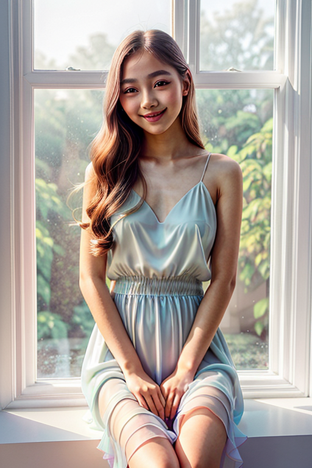
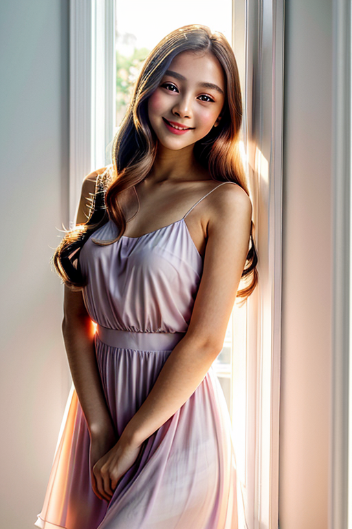
 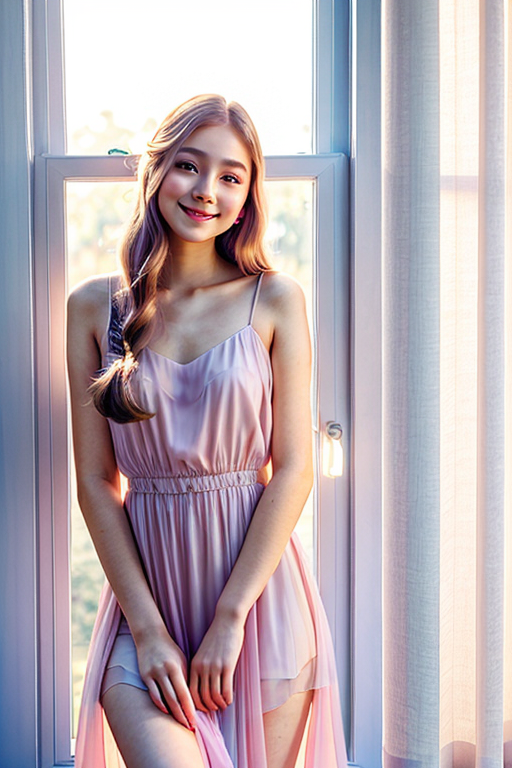
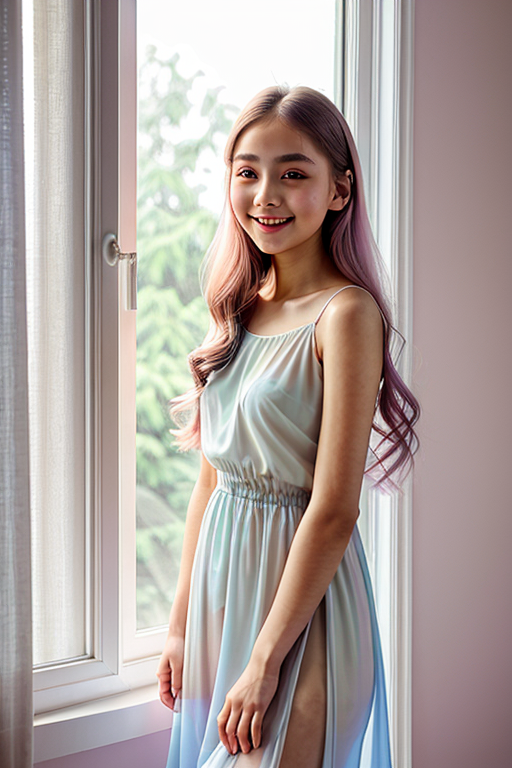
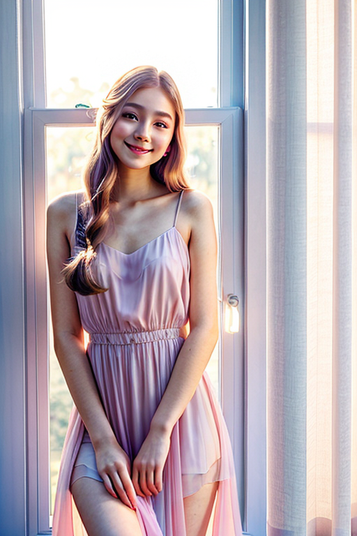
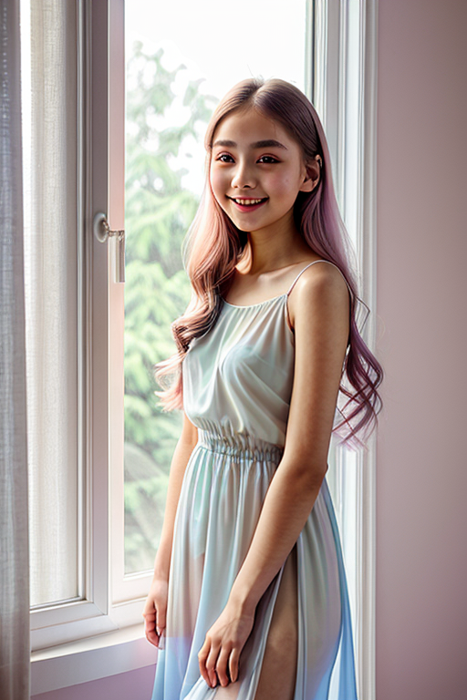
 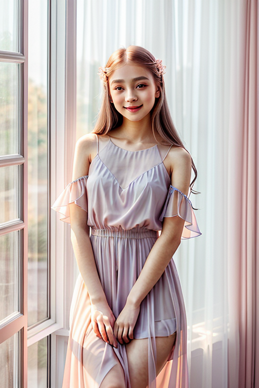
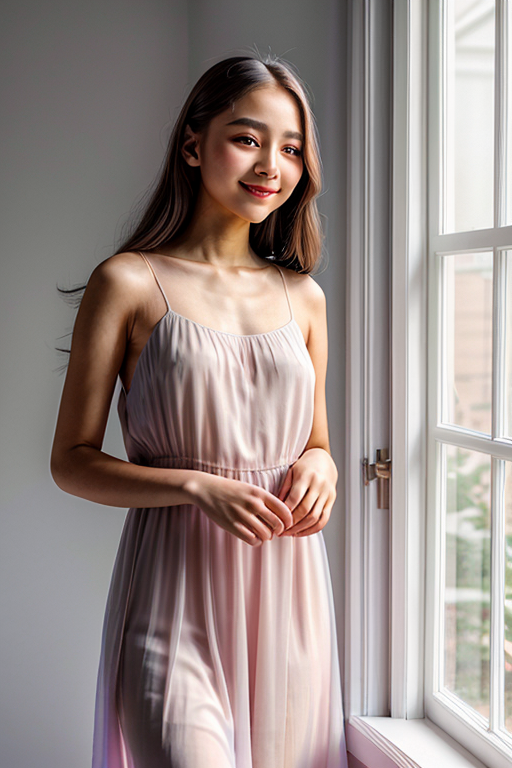
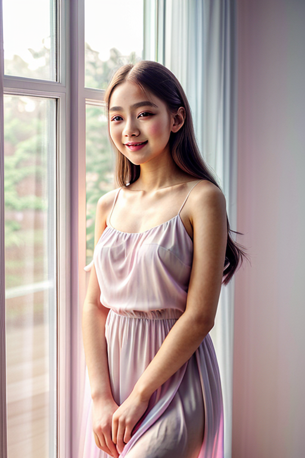
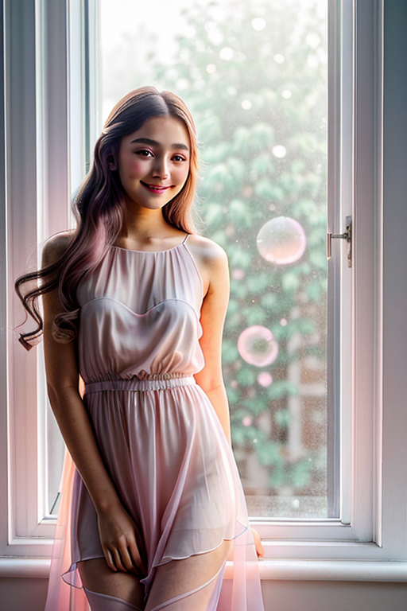
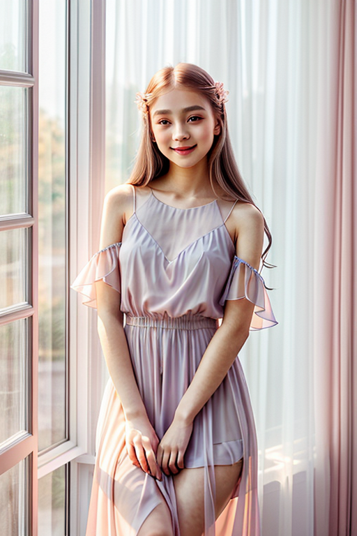
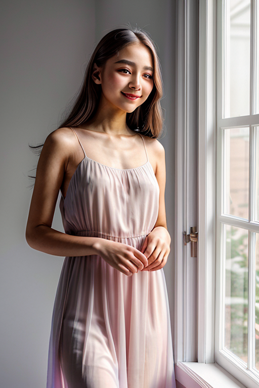
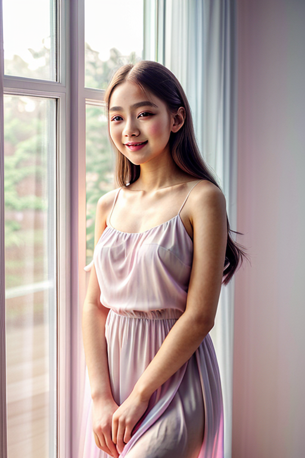
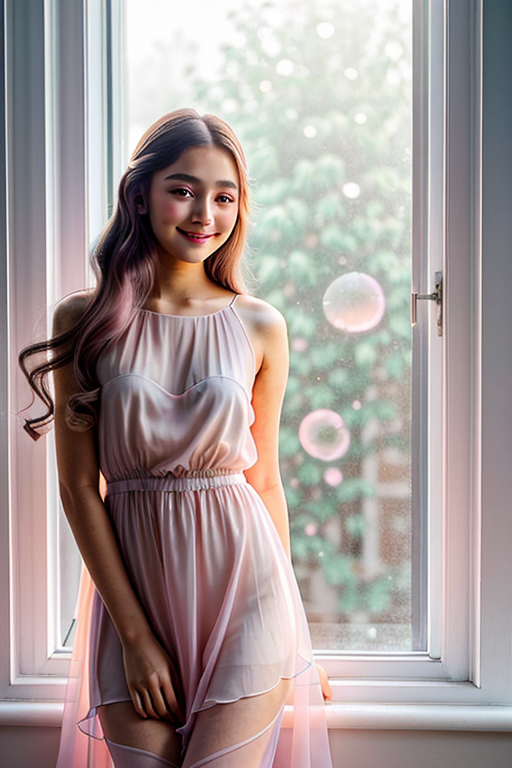
 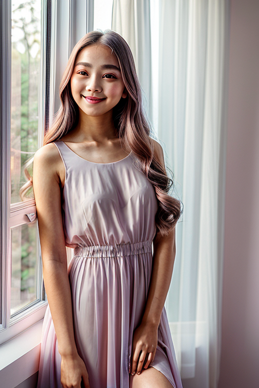
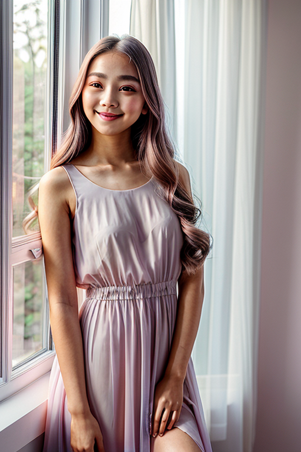

 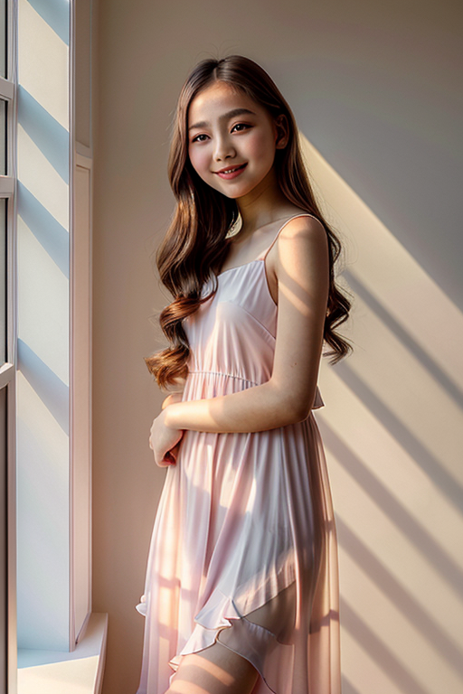
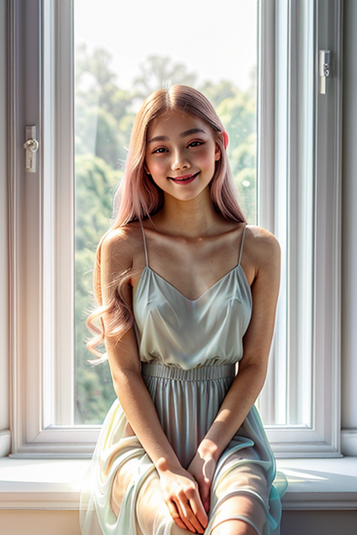
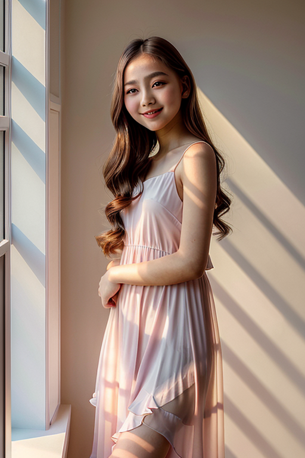
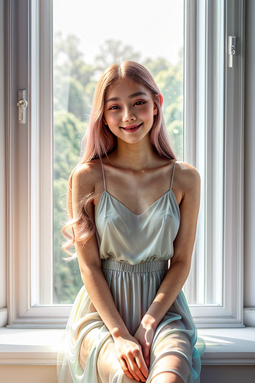
 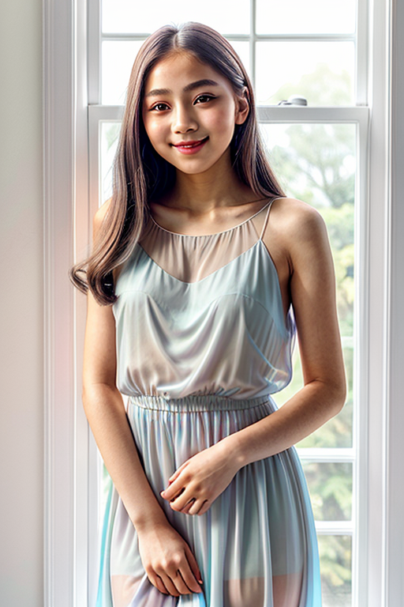
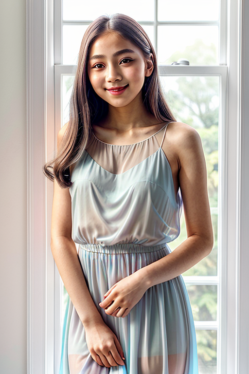

This page explores page1 with a practical focus on visual detail and browsing experience. Alt text and headings are optimized to make the content accessible and to provide consistent cues across the site. Subtle differences in wording help avoid duplication across similar pages. If you are comparing alternatives, keep an eye on subtle differences in framing, contrast, and color balance. Internal navigation leads to related items with comparable tone or composition. This reduces bounce and supports exploration within the same theme. For more context, browse related entries linked nearby; each page offers a slightly different angle to limit overlap. Alt text and headings are optimized to make the content accessible and to provide consistent cues across the site. Subtle differences in wording help avoid duplication across similar pages. Alt text and headings are optimized to make the content accessible and to provide consistent cues across the site. Subtle differences in wording help avoid duplication across similar pages.